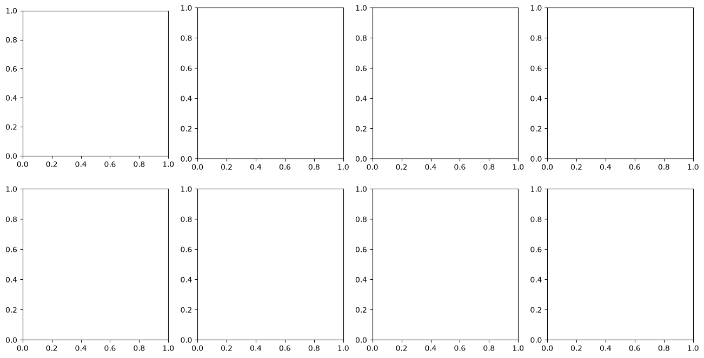

Time series analysis#
# /// script
# requires-python = ">=3.10"
# dependencies = [
# "matplotlib",
# "numpy",
# "scikit-image",
# "scipy",
# "tifffile",
# "imagecodecs",
# "pandas",
# "seaborn",
# "bobiac_tools @ git+https://github.com/bobiac/bobiac-tools.git"
# ]
# ///
from pathlib import Path
import matplotlib.pyplot as plt
import pandas as pd
import seaborn as sns
import skimage
import tifffile
from bobiac_tools import overlay_labels
Overview#
In this notebook, we analyse time resolved data.
We have data of cells where the location of our gene of interes oscillates between the nucleus and the cytoplasm. Our question is What is the frequency of the oscillations?
We have a total of 16 time points with a temporal spacing of 30 min. The background of the images was measured to be 4700.
image_folder = Path("../../_static/images/quant/03_time_series/images/")
image_paths = sorted(image_folder.glob("*.tif"))
fig, axes = plt.subplots(2, 4, figsize=(16, 8))
for ax, path in zip(axes.flat, image_paths[:8]):
image = tifffile.imread(path)
tp = path.stem.split("_t")[1].split("_")[0]
ax.imshow(image, cmap="gray")
ax.set_title(f"t={tp}", fontsize=20)
ax.axis("off")
plt.tight_layout()
plt.show()
---------------------------------------------------------------------------
TypeError Traceback (most recent call last)
Cell In[3], line 9
5
6 for ax, path in zip(axes.flat, image_paths[:8]):
7 image = tifffile.imread(path)
8 tp = path.stem.split("_t")[1].split("_")[0]
----> 9 ax.imshow(image, cmap="gray")
10 ax.set_title(f"t={tp}", fontsize=20)
11 ax.axis("off")
12
[... skipping hidden 1 frame]
File ~/work/bobiac-book/bobiac-book/.venv/lib/python3.12/site-packages/matplotlib/axes/_axes.py:6377, in Axes.imshow(self, X, cmap, norm, aspect, interpolation, alpha, vmin, vmax, colorizer, origin, extent, interpolation_stage, filternorm, filterrad, resample, url, **kwargs)
6374 if aspect is not None:
6375 self.set_aspect(aspect)
-> 6377 im.set_data(X)
6378 im.set_alpha(alpha)
6379 if im.get_clip_path() is None:
6380 # image does not already have clipping set, clip to Axes patch
File ~/work/bobiac-book/bobiac-book/.venv/lib/python3.12/site-packages/matplotlib/image.py:709, in _ImageBase.set_data(self, A)
707 if isinstance(A, PIL.Image.Image):
708 A = pil_to_array(A) # Needed e.g. to apply png palette.
--> 709 self._A = self._normalize_image_array(A)
710 self._imcache = None
711 self.stale = True
File ~/work/bobiac-book/bobiac-book/.venv/lib/python3.12/site-packages/matplotlib/image.py:677, in _ImageBase._normalize_image_array(A)
675 A = A.squeeze(-1) # If just (M, N, 1), assume scalar and apply colormap.
676 if not (A.ndim == 2 or A.ndim == 3 and A.shape[-1] in [3, 4]):
--> 677 raise TypeError(f"Invalid shape {A.shape} for image data")
678 if A.ndim == 3:
679 # If the input data has values outside the valid range (after
680 # normalisation), we issue a warning and then clip X to the bounds
681 # - otherwise casting wraps extreme values, hiding outliers and
682 # making reliable interpretation impossible.
683 high = 255 if np.issubdtype(A.dtype, np.integer) else 1
TypeError: Invalid shape (3, 1040, 1392) for image data

These are the first eight time points.
mask_cells = tifffile.imread(
"../../_static/images/quant/03_time_series/masks/F01_202_cells.TIF"
)
mask_nuclei = tifffile.imread(
"../../_static/images/quant/03_time_series/masks/F01_202_nuclei.TIF"
)
overlay_labels(label_mask=[mask_cells, mask_nuclei])
This are the two label masks for the nuclei and the cells.
✍️ Exercise: Perform this analysis#
For the first time point (image) use
regionprops_tableto measure the expression level of each nucleus. Follow the steps of the previous notebooks.Perform proper quality control and check that the measurements do not contain artefacts.
Set up batch processing to analyse all 16 images. Remember to keep track of where the data came from. Add a column
timethat contains the time at which the image was taken (e.g. 0, 0.5, 1, 1.5) (the unit is hours).Use
sns.lineplotto visualise the oscillations of individual cell as well as the average oscillations, and estimate the frequency.BONUS: Instead of nuclear intensity, calculate the ratio of nuclear/cytoplasmic intensity.
Solution#
1. Measure nuclear intensity#
First, we measure the intesities of all the nuclei in the image.
Load the first time point.
image_path = image_paths[0]
image_t0 = tifffile.imread(image_path)
overlay_labels(image=image_t0)
Remove boundary objects.
mask_nuclei = skimage.segmentation.clear_border(mask_nuclei)
overlay_labels(image=image_t0, label_mask=mask_nuclei)
Measure intesities with regionprops_table ans save measurements as DataFrame.
properties = ["area", "intensity_mean", "label"]
props = skimage.measure.regionprops_table(
mask_nuclei, intensity_image=image_t0, properties=properties
)
df_nuc = pd.DataFrame(props)
print(df_nuc)
Subtract background intensity from measurements. Background was measured to 4700.
background_intensity = 4700
df_nuc["intensity_bg_cor"] = df_nuc["intensity_mean"] - background_intensity
Add time column.
time_point = image_path.stem.split("_")[2]
time = float(time_point[1:]) * 0.5
print(time)
df_nuc["time"] = time
2. Quality control#
sns.histplot(
data=df_nuc,
x="intensity_bg_cor",
bins=20,
)
Seems unsuspicious.
overlay_labels(
image=image_t0,
label_mask=mask_nuclei,
df=df_nuc,
id_col="label",
measurement_col="intensity_bg_cor",
)
Looks fine.
Batch processing#
list_df = []
for image_path in image_paths:
image = tifffile.imread(image_path)
props = skimage.measure.regionprops_table(
mask_nuclei, intensity_image=image, properties=properties
)
sdf = pd.DataFrame(props)
sdf["intensity_bg_cor"] = sdf["intensity_mean"] - background_intensity
time_point = image_path.stem.split("_")[2]
time = float(time_point[1:]) * 0.5
sdf["time"] = time
list_df.append(sdf)
df = pd.concat(list_df)
print(df)
Plotting#
df.groupby(["label", "time"])["intensity_bg_cor"].mean().reset_index()
sns.lineplot(data=df, x="time", y="intensity_bg_cor", errorbar="sd")
sns.lineplot(data=df, x="time", y="intensity_bg_cor", hue="label")